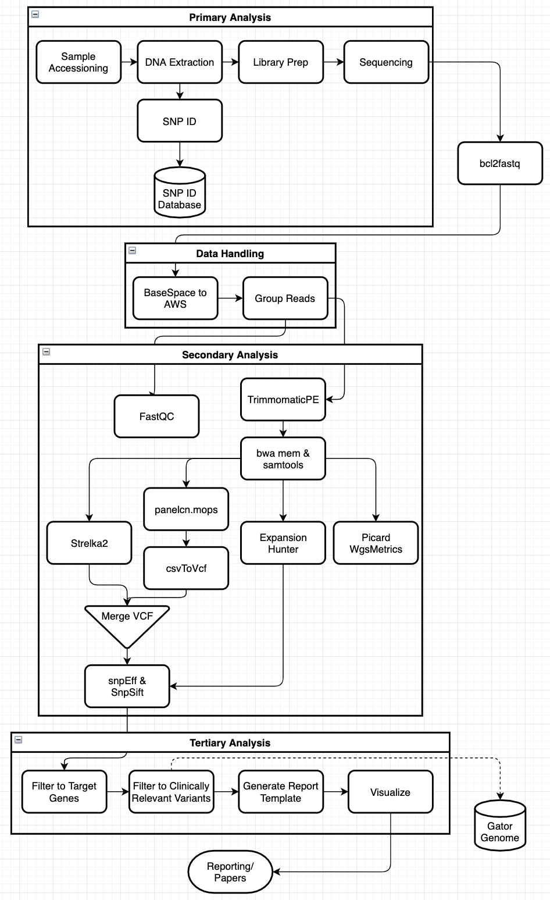

Pipeline Summary
Return to Table of ContentsSummary
The genome analysis pipeline is based on GATK standards and is composed from open source software: bwa 0.7.14-r1188, Picard 2.23.8, snpEff 5.0c, Strelka2 2.9.10, bcftools 1.10.2, samtools 1.10, Expansion Hunter 4.0.2, FastQC 0.11.9, panelcn.mops 1.8.0, TrimmomaticPE 0.39, and MultiQC 1.9. FASTQ files containing all reads that pass instrument quality control are generated from the BCL files produced by the Illumina NovaSeq 6000 using bcl2fastq. This process de-multiplexes all samples run and ensures they are uploaded to the correct project folders in Illumia BaseSpace, based on a provided sample sheet. The FASTQ files are then imported from BaseSapce and into an AWS (Amazon Web Services) S3 bucket. The pipeline is executed by running python3 launchers that corespond to the correct Nextflow file. Nextflow is a domain-specific language (DSL) that allows for the creation of scalable and reproducable, data driven, scientific pipelines. Uing Nextflow allows us to process all samples from NovaSeq 6000 runs in parallel, reducing both the amount of manual imput time required to handle data, and the runtime of the pipeline. Short reads are trimmed using Trimmomatic and then aligned using bwa mem to the human reference genome hg19. Single nucleotide variants (SNVs) and indels are called jointly with Strelka2, copy number variants (CNVs) are called with panelcn.mops, and estimated repeats are called with Expansion Hunter. Called variants are then annotated with snpEff using the hg19 database and dbNSFP data is appended using SnpSift. Annotated variant call files (VCFs) can then be filtered using signed off panels. This filtered data is then transformed and databased so it can be delivered in a quick and concise manner to ordering individuals.
During the pipeline run, FastQC, Picard, and snpEff are generating quality metrics to help help determine health of the data.
| Program | QC Metrics |
|---|---|
| FastQC | Metrics on fastq files |
| Picard CollectWgsMetrics | Metrics on WGS alignment |
| Picard CollectHsMetrics | Metrics on WES alignment |
| snpEff | Metrics on variant calls |
After the pipeline has finished processing the data and all QC metrics are generated, MultiQC is run for the entire run. MultiQC coalesces all the QC output into a simgle HTML file. This allows us to directly compare the quality of all samples in the run and optionally focus on individuals.

How Programs Are Grouped in Nextflow
Software grouped together runs in parallel for each sample.
Processing fastq
- Cat : Concatinating forward and reverse reads
- FastQC : Generating QC metrics for reads off of NovaSeq 6000
- TrimmomaticPE : Read trimming and metrics on number of paired and unpaired reads
Alignment
- BWA MEM : Aligning forward and reverse reads to reference
- Samtools : Converting SAM file to BAM file (sequence to binary alignment map)
Variant Calling
- Collecting Metrics
- Picard : Generating metrics on alignment
- Java
- Calling SNV
- Strelka2 : Calling SNP, SV, and INDELS
- Python
- Sed
- Calling CNV
- Panelcn.MOPS : Uses countWindows/ read counts to detect copy number variants
- R
- Scripting : Scripts are written to transform data into more usable format
- Sed
- Awk
- Bgzip
- Grep
- Gunzip
- Calling Repeats
- Expansion Hunter: Calls repeats detected in specified regions in the genome
- Bgzip
Merge VCF
- Bcftools : Used for indexing, comparing, and filtering VCF files
- Bgzip
Annotate Variants
- SnpEff : Annotating VCF from a database
- Java
- SnpSift : Adding data from dbNSFP to the annotated VCF
- Java
- Bgzip
Output
Samples batched and processed by run id.
WGS/WES
This part of the pipeline returns two annotated VCFs. One contains the SNV, SNP, INDEL, and CNV information. One contains expansions.
Reporting
This part of the pipeline returns a VCF file filtered by a signed out panel. You get all data returned as long as it overlaps with the panel. Origional VCFs generated by the WGS/WES pipline persist.
MultiQC
This part of the pipeline generates a coalescence of all qc metrics generated during the WGS/WES run. The return is a HTML file that can be opened in the browser.
What Happens to Data
The origional sample files, after being processed through the pipeline completely, are then "archived" into a _Processed/directory, where a life cycle policy is placed on them. This policy will dictate when the files will be put into "S3 Glacier" storage. This storage is a more long term solution. The price goes down, but the ability to retrieve the data become much slower (12-24 hours).
Output from the pipeline, however, will be maintained in speedier storage for much more rapid access and possible reprocessing.
To Top